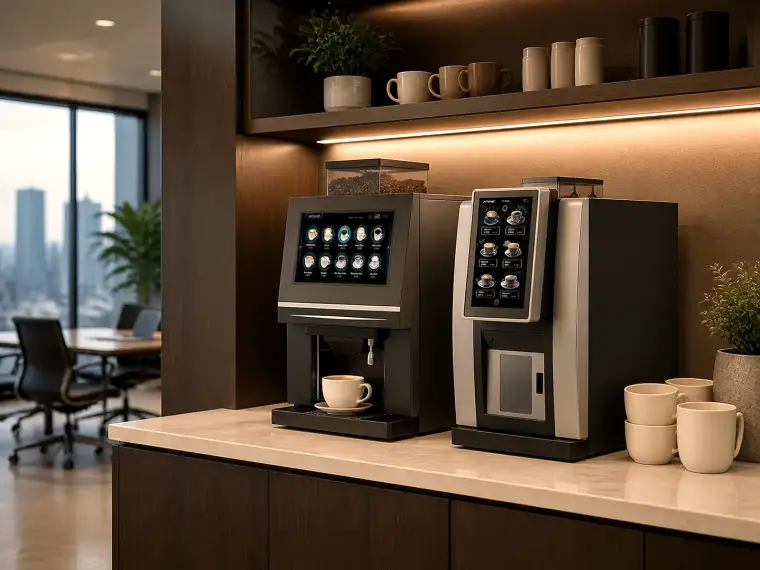
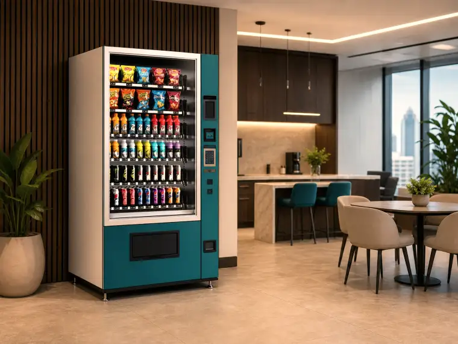
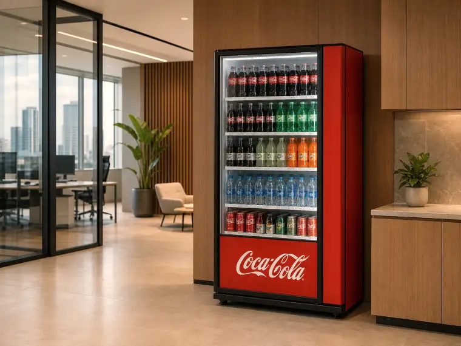
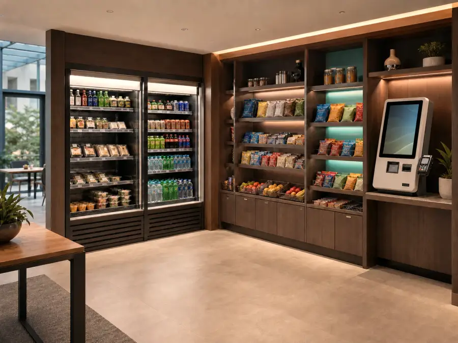
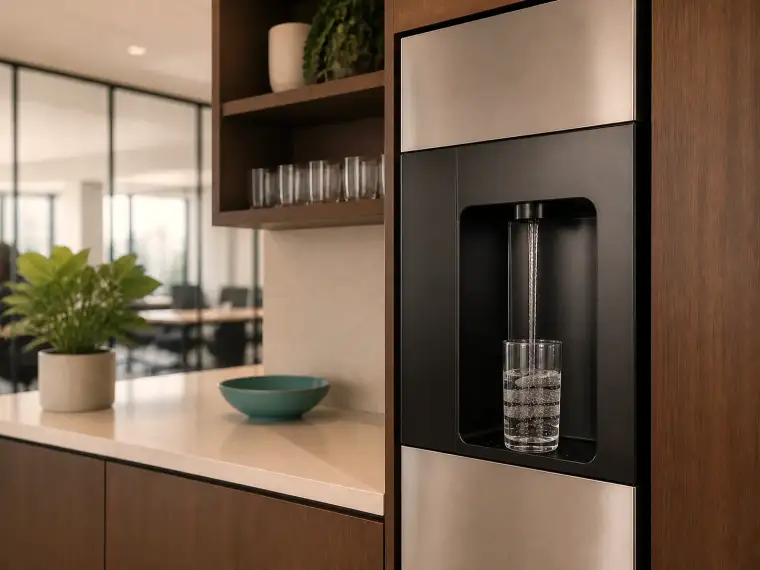

Café, snacks y agua para oficinas en Panamá
Que nadie en tu oficina tenga que salir por un café.
Instalamos las máquinas, las abastecemos y las mantenemos. Tu equipo solo las usa — en la ciudad y en el interior del país.
La cuenta
Dos datos y ves tu número.
Sin formulario previo. Si el número te cierra, al final nos escribes — no al revés.
Servicios
Cinco cosas, un solo proveedor.
Cada una se instala, se abastece y se mantiene por nuestra cuenta. Nadie de tu equipo compra insumos ni llama al técnico.

01Café
Grano a taza, recién preparado toda la jornada. Nadie compra insumos ni llama al técnico.
Calcular
02Snacks
Surtido según el tamaño del equipo y lo que de verdad consume.
Calcular
03Soda
Bebidas frías con reposición programada. Efectivo, tarjeta o Yappy.
Calcular
04MicroMarket
Una tienda abierta dentro de la oficina, con autopago. Abierta cuando tu gente lo esté.
Calcular
05Agua purificada
Sin garrafón, con filtros y mantenimiento incluidos.
CalcularContra qué compite
Casi nadie compara proveedores. Comparan con lo que ya tienen.
Y lo que ya tienen suele ser una cafetera que alguien compró hace años y un rato perdido cada tarde.
| Lo de siempre | La cafetera del piso | Bajar a la esquina | Con servicio |
|---|---|---|---|
| Quién compra el insumo | Alguien de administración, cuando se acuerda | Cada quien, de su bolsillo | Nosotros, antes de que se acabe |
| Cuando se daña | Se busca técnico y se cotiza | — | Lo resolvemos nosotros |
| Tiempo que se va | El de quien la limpia y la surte | 15 a 20 minutos por salida | Ninguno de tu equipo |
| Qué hay a las 3 p.m. | Lo que sobró de la mañana | Lo que haya abierto | Lo mismo que a las 8 |
| Fuera de la capital | Igual, pero sin técnico cerca | Depende de dónde quede | Mismo servicio en todo el país |
La idea
Una oficina no consume parejo. Tiene horas.
Por eso no alcanza con una máquina de café. Cada momento del día pide algo distinto — y si falta justo a esa hora, la gente sale a buscarlo.
Por qué importa
Una pausa mejor es de las formas más baratas de cuidar a un equipo.
No reemplaza un aumento ni un buen jefe. Pero se resuelve en una semana y no depende de que cambie nada más en la empresa.
Estudios con empleados en Estados Unidos asocian una mejor experiencia laboral con más permanencia y bienestar. Son asociaciones, no resultados atribuibles a una amenidad en particular. Fuentes: Gallup y Great Place to Work.
Cómo trabajamos
Cuatro pasos, y solo uno te toca a ti.
Evaluamos
Vemos el espacio, cuánta gente hay y qué consumen hoy.
Diseñamos
Proponemos qué equipos van, dónde y con qué surtido.
Apruebas e instalamos
Lo único que necesitamos de tu lado: el visto bueno.
Operamos
Reabastecemos y damos mantenimiento. Si algo falla, lo resolvemos nosotros.
La operación
Lo que sostiene el servicio.
Cobertura
Si tu operación está fuera de la capital, seguimos siendo tu proveedor.
La mayoría de los acuerdos de café y snacks se limitan a la ciudad. El nuestro no: misma instalación, mismo reabastecimiento y mismo soporte técnico en todo el país.
Preguntar por mi provinciaRecursos
Lo que conviene saber antes de decidir.
Escribimos sobre las preguntas que nos hacen antes de firmar. Sin vender nada.
- Cómo elegir una máquina de snacks según el tamaño de tu equipoSnacks
- Cómo planificar un MicroMarket para tu oficinaMicroMarket
- Efectivo, tarjeta o Yappy: cómo funciona el pago en una máquina de sodaSoda
- Dispensadores de agua sin garrafón: qué debe evaluar tu empresaAgua
- Filtros y mantenimiento de un dispensador de agua sin garrafónAgua
- Agua fría, caliente o al tiempo: qué necesita una oficinaAgua
Contacto
Cuéntanos cuántos son y dónde están.
Con eso alcanza para armarte una propuesta.